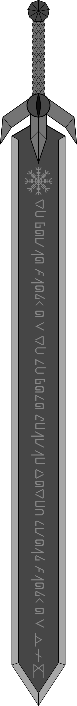

ESPADA
Raridade
“Espada”: única
(Modelo Claymore) em Kohan: comum / fora de Kohan: raro
Claymore
Todo soldado berserker recebe uma arma feita de aço negro, podendo ser um machado, arco, clava, espada ou qualquer outro de sua escolha. As unidades que usam uma espada como essa são chamadas de claymores, assim como as lâminas.
Cada parte da espada é propositalmente da forma que deve ser:
- O pomo tem nove partes, representando os noventa mil soldados sombrios.
- O cabo tem escamas entalhadas para lembrar de Udra, o “progenitor” dos berserkers.
- A guarda dividida em três com um olho faz referências garras e a visão de um berserker.
Seu tamanho e peso excessivo não são problemas para soldados sombrios, tornando-se proporcionais quando libertam o sangue de Udra.
“Espada”
Claire recebeu a sugestão de usar uma espada, devido as observações de seu mestre Grian. Sua arma mede aproximadamente um metro e meio, sendo quase do mesmo tamanho que a portadora. Diferente das lâminas comuns, Claire recebeu de seu treinador uma repleta de símbolos kohanianos e antigos viquingues.
O nome da peça de Claire derivou de uma conversa que teve sobre que nome deveria dar para sua arma. O nome “Espada” pareceu perfeito, não pela falta de criatividade da soldada mas, pelo que representava para ela: “‘Espada’ é um nome simples e claro igual a função dela”.
Além das marcas, a Espada tem uma propriedade diferente das outras do mesmo modelo: desde que Claire a recebeu, não houve uma única vez que ela teve de afiá-la.
NAS LENDAS DO CONTINENTE
Dentes e Garras — Claire — Capítulo VI: Determinação
“Quando ela virou o rosto viu uma grande espada escura, do mesmo material que o machado; tão comprida que tinha a mesma altura da recruta. — Isso é uma espada claymore. Uma como esta não é comum em Kohan, por isso veio de muito longe.”
Dentes e Garras — Dentes e Garras — Capítulo VIII: Insegurança
“— Vê os últimos símbolos? São runas. [...] Os ao meio não conheço. E, o que está próximo da guarda, é uma variação mais recente da era pós viquingue. Não me lembro exatamente do nome, “aegis”… [...]’
‘— Isso é um aegishjalmur, e os outros símbolos são kohanian. — Claire ficou alerta aos acertos do butcher.”